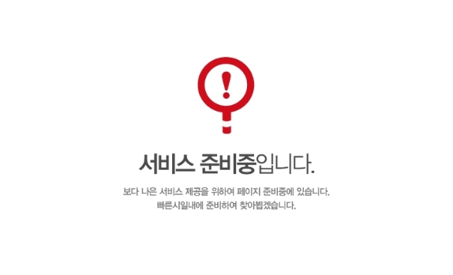

각 시도 시험안내 게시판 바로가기
인터넷 원서 접수

| 시험명 | 접수 및 취소기간 (접수취소시간 : 09:00 ~ 24:00) |
구분 | 시험장소 공고일 |
시험일 | 합격자 발표일 |
|---|---|---|---|---|---|
| 제1회 공개경쟁임용 (간호직) 제1회 경력경쟁임용 (수의, 속기직) |
접수 : 2.21 (월) ~ 2.25 (금) *취소 : 2.21 (월) ~ 2.28 (월) 18시 |
필기 | 1~2월 중 | 4.30 (토) | 5.20 (금) |
| 면접 | 5월 | 5~6월 | 6.10 (금) | ||
| 제2회 공개경쟁임용 (8·9급 등) | 접수 : 3.21 (월) ~ 3.25 (금) *취소 : 3.21 (월) ~ 3.28 (월) 18시 |
필기 | 5.18 (수) | 6.18 (토) | 7.15 (금) |
| 면접 | 7.15 (금) | 8.1 (월) ~ 8.10 (수) | 8.22 (월) | ||
| 제3회 공개경쟁임용 (7급 등) 경력경쟁임용 (연구·지도사 등) |
접수 : 7.18 (월) ~ 7.22 (금) *취소 : 7.18 (월) ~ 7.25 (월) 18시 |
필기 | 9.29 (목) | 10.29 (토) | 11.22 (화) |
| 면접 | 11.22 (화) | 12.6 (화) ~ 12.8 (목) | 12.20 (화) |
상기 일정은 시험시행 여건에 따라 변동될 수 있습니다.
※ 국가직 시험 일정 : [9급] 4월 2일 (토) / [7급 1차] 7월 23일 (토)
| 구분 | 응시원서 접수기간 | 장소 공고 | 시험 일시 | 합격자발표 |
|---|---|---|---|---|
| 상반기 | 2022. 2. 28.(월) ~ 3. 2.(수) | 3. 30.(수) | 2022. 4. 16.(토) | 4. 27.(수) |
| 하반기 | 2022. 5. 23.(월) ~ 5. 25.(수) | 6. 15.(수) | 2022. 7. 2.(토) | 7. 13.(수) |
시험에 관련된 주요 질문과 답변을 정리하였습니다
2022년 충청남도 제2회 공임 및 경임 추가 면접시험 시행계획 공고
2022년도 충남 지방공무원 제 2회 공임 및 제2회 경임 최종합격자 결정 및 임용후보자 등...
2022년도 충남 지방공무원 제 2회 공임 및 제2회 경임 최종합격자 결정 및 임용후보자 등...